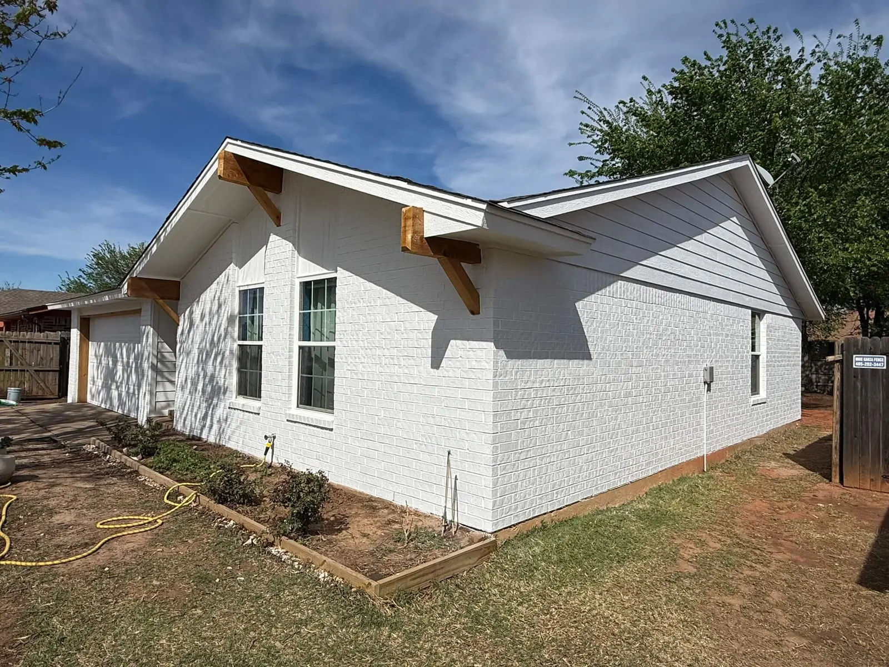
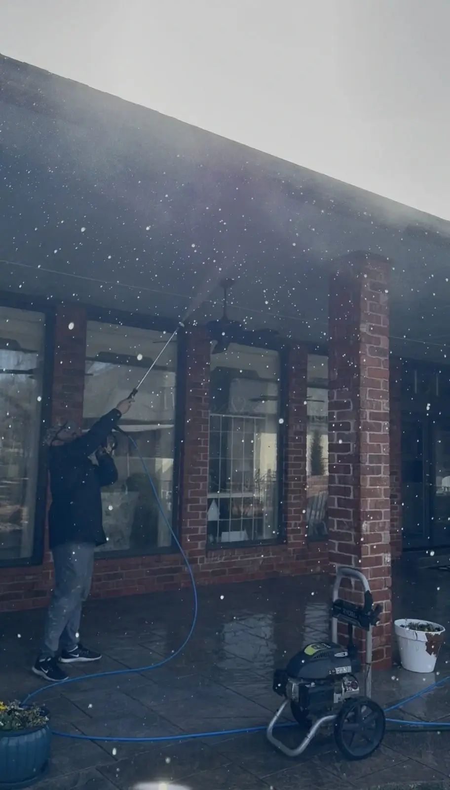
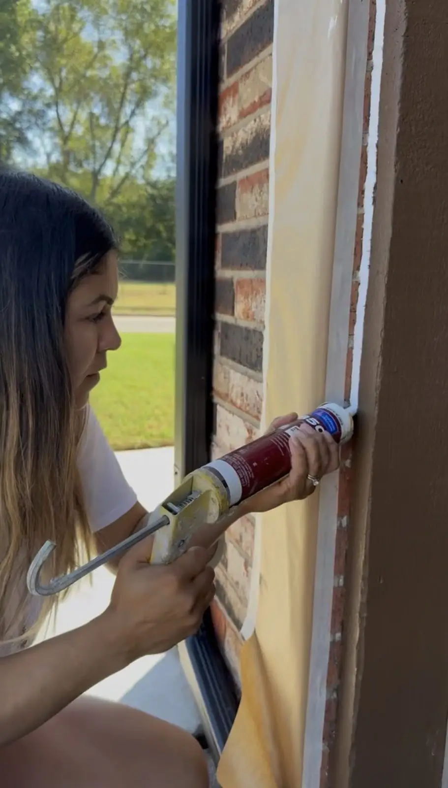
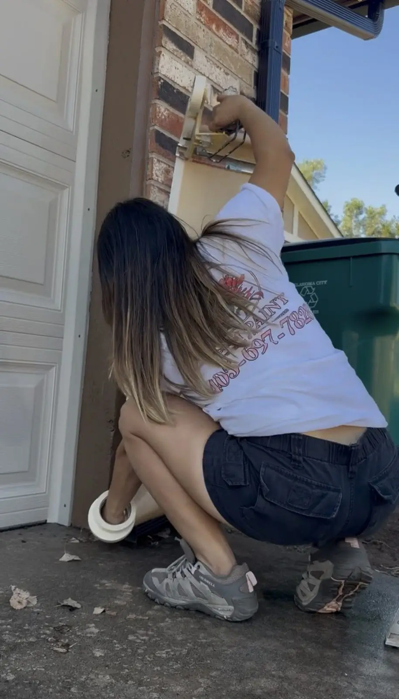
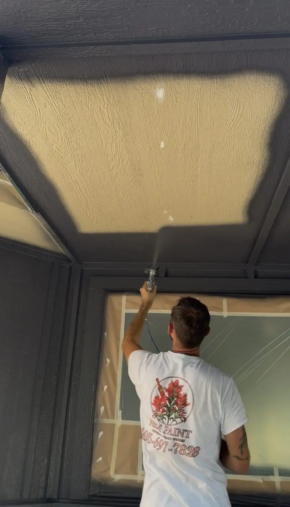
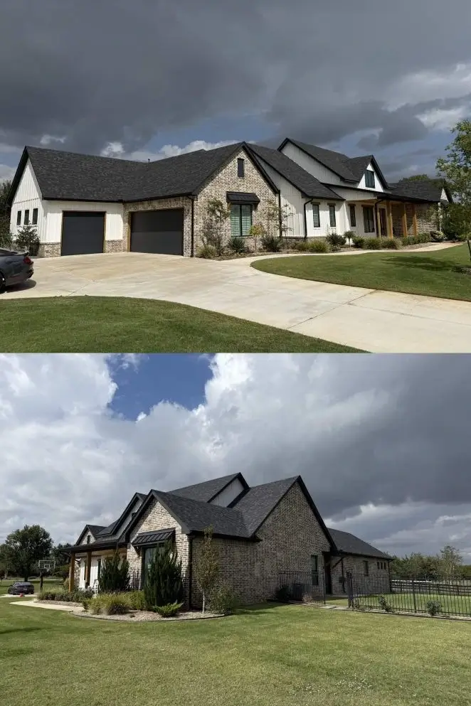

Built for Oklahoma exposure
Homes around Oklahoma City can take a lot of sun, wind, storms, and dust. We focus on washing, scraping where needed, sealing gaps, and using exterior products that make sense for the surface.
Premium exterior painting for Oklahoma City homeowners who want it done right — clean, professional, and built to last.

F&M Paint serves homeowners throughout Oklahoma City with exterior painting focused on preparation, clean finishes, and long-term curb appeal.
F&M Paint provides premium exterior painting services throughout the OKC metro. We focus on full exterior repaints where preparation, clean lines, and long-term durability matter.
Whether your home has brick, siding, trim, fascia, soffit, garage doors, or painted accents, we build the project around the surface so the final result looks intentional and lasts longer.
We take pride in every Oklahoma City home we work on because our reputation is built on clean results, communication, and doing the project the right way.
We are best for homeowners who want clear communication, clean job sites, proper prep, and a finished exterior that feels complete.
Oklahoma City homes deal with strong sun exposure, wind, storms, moisture, and wide seasonal temperature swings. Over time, that can lead to fading, chalking, cracked caulking, peeling paint, and exposed trim or siding.
We look at the home’s condition before painting so the prep and coating system match what the house actually needs.
Many homes in Oklahoma City have a mix of brick, siding, painted trim, garage doors, and exterior accents. Each surface needs to be handled correctly.
That may mean pressure washing, scraping loose paint, spot priming bare areas, caulking gaps and seams, masking carefully, and using the right Sherwin-Williams product system for the surface.
Oklahoma City has a wide mix of brick homes, siding exteriors, established neighborhoods, newer builds, and properties exposed to Oklahoma wind, dust, storms, and sun. Exterior painting here needs to account for more than color. Surface condition, caulking, primer, and product selection all matter.
Homes around Oklahoma City can take a lot of sun, wind, storms, and dust. We focus on washing, scraping where needed, sealing gaps, and using exterior products that make sense for the surface.
Many OKC homeowners want a fresh look that feels updated but still fits the home and surrounding area. Warm whites, darker accents, and clean trim lines can make a big difference.
We are especially well suited for complete exterior projects involving siding, soffit, fascia, trim, doors, garage doors, brick accents, and full color refreshes.
Before starting, homeowners often find it helpful to review our exterior painting cost guide and our Oklahoma exterior color guide.
We specialize in exterior projects where the details matter and the final result changes how the home feels.
Complete exterior painting for Oklahoma City homes that need a clean, durable, professional finish.
LP siding, wood siding, fascia, soffit, overhangs, and painted trim details.
Masonry prep and coating systems for homeowners who want to transform brick the right way.
Front doors, garage doors, and accent details that complete the exterior transformation.
Premium results come from proper prep and a consistent process, not shortcuts.
We review the home, talk through your goals, and identify the right approach for the exterior.

We wash, scrape, sand, and prepare the surfaces so the coating has the right foundation.

We seal gaps and seams where needed to improve the finished look and help protect the home.

Windows, brick, roofing, concrete, fixtures, and other surfaces are protected before paint is applied.

We apply premium Sherwin-Williams systems with care for even coverage and a sharp finish.

We review the completed work with you and make sure the finished result meets the standard promised.
We are a veteran and family-owned painting company focused on quality, communication, and exterior transformations that feel complete.
You are not left guessing. We communicate before and during the project so you know what is happening.
We keep the work area clean and respectful because the experience should feel professional from start to finish.
We focus on washing, scraping, priming, caulking, masking, and surface preparation before the final finish goes on.
We use Sherwin-Williams systems and choose products based on the surface and condition of the home.
We are best suited for Oklahoma City homeowners who want a clean, well-planned exterior repaint rather than a rushed patch job.
Most of our exterior projects involve siding, trim, soffit, fascia, doors, garage doors, brick accents, or full color transformations.
If you care most about the lowest price, we may not be the best fit. If you care about prep, communication, and the final result, we probably are.
Many do. Wind, dust, sun, and storms can affect exterior surfaces, so washing, caulking, scraping, and priming are important parts of the process.
Yes. We serve OKC and nearby areas, including homes where exposure, access, surface condition, brick, siding, and trim all need to be reviewed carefully.
Yes. Brick, siding, trim, and fascia may each need different prep and products. Our brick painting guide explains more.
Fading, chalking, cracking caulk, peeling paint, and exposed bare areas are common signs. You can also read our Oklahoma repainting guide.
Tell us about your Oklahoma City exterior painting project. We’ll review the details, confirm the scope, and help you take the next step.
Send us your project details and we’ll follow up with the next step.
Get Your Exterior Quote